Step 3: Detecting Design Errors
Contents
Introduction

There are many different ways to perform testing in Simulink. Traditionally, verification involves the user creating a set of test vectors based on certain requirements. The user can also create a set of expected outputs matching the giving inputs, or visually analyze the simulation making sure the behavior is as expected. The type of test vector created can be either functional, or based on certain robustness criteria or standards. With this method, the quality of the test is entirely based on the quality of the input vectors and being able to capture or reproduce a real world scenario as closely as possible. This topic is covered in Step 4: Testing by Simulation.
One of the benefits of Model-Based Design is the ability to apply other “non-simulation” techniques to your model. These formal techniques are most beneficial when you are working with logic-intensive models. In this section, we will use Simulink Design Verifier to formally analyze our model for us to check if there are any unreachable states or transitions and if there are any divide by zero design errors. The recommendation is to run these design error checks before executing the simulation based tests to catch errors early and have a more efficient testing workflow.
There are three main functions Simulink Design Verifier:
- Design Error Detection: Focus of this step, finds hard to find design errors including dead logic, divide by zero, overflow and out of bound array access
- Test Generation: Focus of Step 5: Test Case Generation, generate test cases based on model objectives and/or coverage objectives to augment functional test cases
- Property Proving: Focus of Step 8: Property Proving, model the expected behavior and prove the implementation will always meet requirements
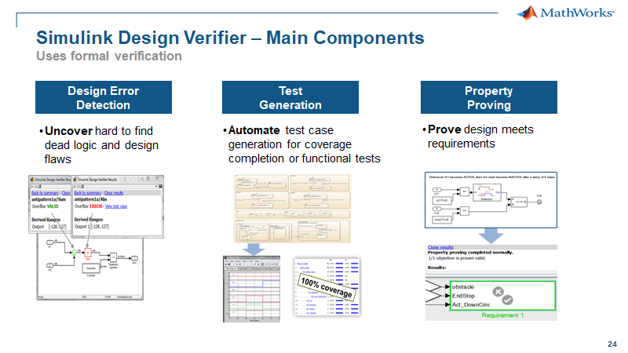
In addition to formal techniques for model checking, there are formal techniques for code checking. These methods are similar to the checks for the model and we will will perform these checks on the associated code for an s-function block in the model. We will be using Polyspace Bug Finder to analyze the code for run-time errors including dead code, divide by zero, overflow and out of bound array access.
Verification and Validation Tools Used
- Simulink Design Verifier
- Polyspace Bug Finder
Running Dead Logic Detection on the Model
In this step, we are going to use Simulink Design Verifier to analyze our model. Our goal is find dead logic, meaning logic that cannot be true and false based on the input ranges and data flow analysis. We can also analyze our model for design errors like integer overflows, division by zero and out of bound array access.
We will be using Design Error Detection to check each design iteration. In this section we will first analyze our design from the ad-hoc testing and then in a later section iteratively change the design based on feedback from design reviews and field testing.
Simulink Design Verifer uses formal methods which means that the analysis is "exhaustive" compared to simulation-based testing which is "non-exhaustive".
We will be using the "CruiseControl" model with the design changes from the ad-hoc testing.
To perform the dead logic analysis, do the following:
1. Open "CruiseControl.slx" – click here.
2. Make the menu selection Analysis/Design Verifier/Options.

3. In the Configuration Parameters dialog, navigate to ... Design Error Detection, check Dead logic, check Identify active logic and select OK.

4. To perform the analysis, make the menu selection Analysis/Design Verifier/Detect Design Errors/Model.
Once completed the results window will appear. Near the top of the results window, there is information that tells the user the current status. In this case, the model has total of (74) objectives.
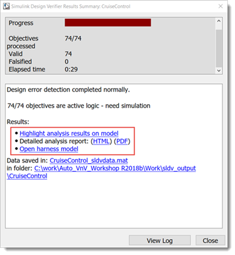
For each decision or transition, there are two objectives: one for a true result and one for a false result. There are also two corresponding objectives for each condition. As an example, a single condition decision would only have (2) objectives but a double condition decision would have (6) objectives:
- (2) for the decision and
- (4) for the two conditions
The analysis will shows there are no falsified objectives.
This means all of the T/F decision and condition objectives can be achieved based on the input ranges and data flow analysis. This is a static test and should not be confused with coverage analysis which indicates whether each objective has been achieved through a dynamic test or a simulation test using a set of input vectors. Below we will show how to get coverage based on the generated test cases from the analysis.
It is recommended to run Design Error Detection for Dead Logic before simulation based testing and before checking in design changes.
5. To review the results on the model, select "Highlight analysis results on the model" in the results summary window. Select transitions in the chart to understand what objectives are being analyzed.
In the example below, the exit transition "[Brake Speed>maxtspeed Speed<mintspeed]" was analyzed for (2) Decision objectives and (6) Condition Objectives.
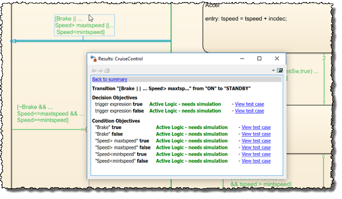
6. For more details on the results open the report by selecting the "Detailed analysis report: (HTML)" link in the results summary window.
To get help with interpreting the Design Verifier results in the report - click here.
The results show all objectives as "Active Logic - needs simulation" which means further simulation is needed to confirm the "active logic" status. Design Verifier has generated test cases and created a test harness to facilitate the confirmation of the "active logic" status.
7. To open the harness select "Open harness model" in the results summary window.
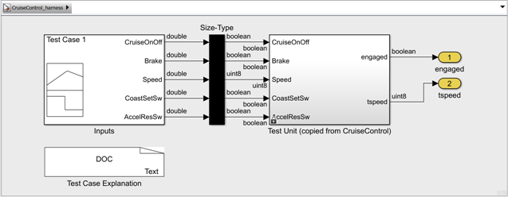
8. Open the "Signal Builder" block in the harness and press the "Run All" button.
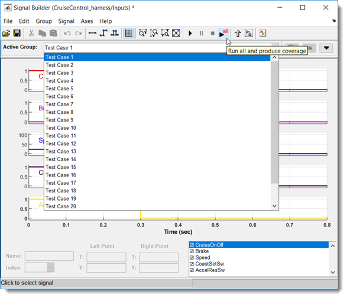
Once all the test cases have been executed a "Coverage Results" window will popup to show the coverage results for the harness.
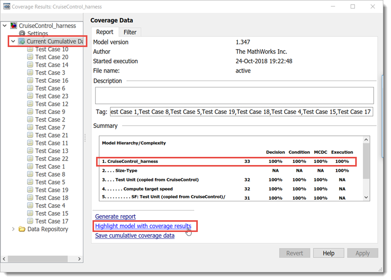
These are coverage results for running all the generated test cases. Notice the "CruiseControl_harness" has 100% coverage which confirms the "active logic" status for all the objectives. The generated test cases are structural and not functional test cases, meaning they are not based on requirements or expected behavior. This confirms it is possible to create requirements based test cases to completely cover the model if the requirements and implementation match. More on this topic is covered in "Step 4: Testing by Simulation".
9. Select "Highlight model with coverage results" to show all transitions are fully covered.
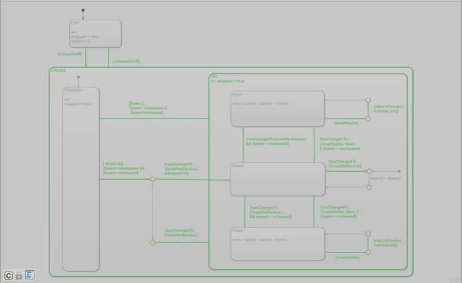
We now have a good design that has passed ad-hoc testing and has no dead logic.
Checking Design Changes for Dead Logic
In the previous section we showed our refined model from the ad-hoc testing had no "dead logic" or all "active logic". In this section we will go through a few design iterations and analyze each change for "dead logic" using Design Error Detection function as we did in the previous section.
From a design review it was pointed out that the early ad-hoc testing and static analysis were performed with nominal calibration values. It was recommended to perform the ad-hoc testing and static analysis at the limits of the calibration values. Specifically test the design with the maximum "holdrate" of (10) and the maximum "incdec" of (2). First an "incdec" value of (2) was used; the design passed the ad-hoc testing and the static analysis with no "dead logic". Next a "holdrate" value of (10) was used: the design passed the ad-hoc testing and the static analysis found (10) objectives were "dead logic". Let's modify the "holdrate" value to (10) and run Design Error Detection to investigate the results.
1. If not open, open "CruiseControl.slx" – click here.
2. In the command window, execute "holdrate.Value = 10"
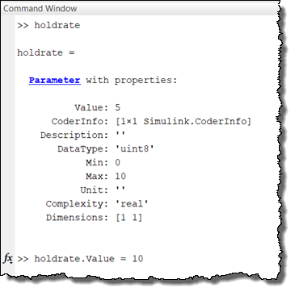
3. Perform Design Error Detection on the model
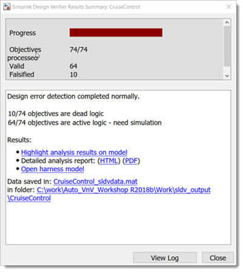
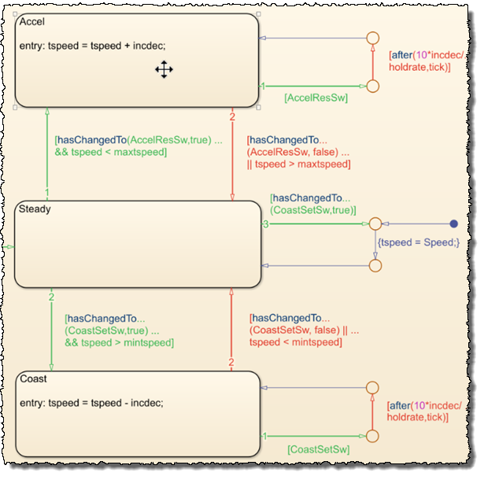
4. Analyze the transitions with "dead logic"
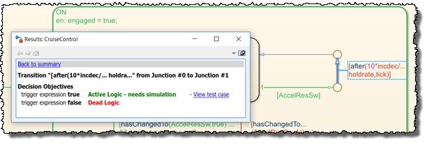
- Transition "[after(10*incdec/holdrate,tick)]" can never be false. The transition expression "10*incdec/holdrate" evaluates to (1). The tick value is always greater than or equal to (1) so the transition will always be valid (or executed).
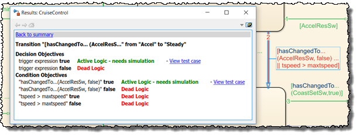
- Transition "hasChangedTo(AccelResSw,false) tspeed>maxtspeed" can never be false. The transition is only tested after the first transition "[AccelResSw]" is false so the condition "hasChangedTo(AccelResSw,false)" will always be true. The overall decision will always be true which makes the second condition of an or decision "dead logic".
It appears the design has logic errors when we have a "holdrate" of (10). But we know that with a "holdrate" of (5) the design has no "dead logic". Is there a way to test the design with multiple values of the "holdrate" that would show the design has no "dead logic"? Yes! Design Verfier provides a pane to enter a range of parameters to be used in the static analysis.
5. Open Design Verifier and navigate to the "Parameters" section. Configure the "Parameters" to use the full range of "[0 10]". This can be automated by selecting Find in Model and enabling the Use of the "holdrate" parameter.

6. Run Design Error Detection on the model
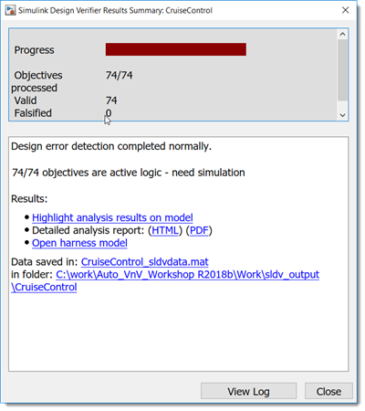
Using the parameter range, Design Error Detection now shows our design has no "dead logic".
The model was then analyzed in a design review meeting. From the design review it was highly recommended to change the execution order of the exit transition and hold transition so the exit condition based on the maximum safe speed was executed first.
7. In the model change the execution order so the exit condition based on target speed "tspeed" from the "Accel" and "Coast" state were executed first.
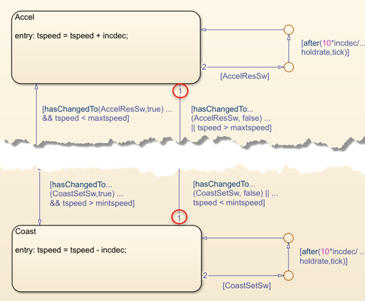
8. Run Design Error Detection on the model
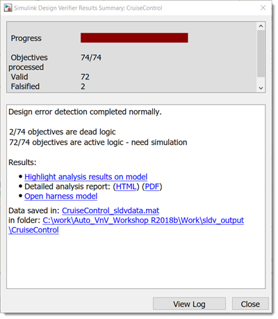
9. Analyze the transitions with "dead logic"
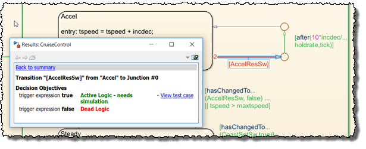
- Transition "[AccelResSw]" can never be false. This transition is now tested after the first transition condition "hasChangedTo(AccelResSw,false)" has been evaluated. If "hasChangedTo(AccelResSw,false)" is false then "[AccelResSw]" has to be true making the false objective for "[AccelResSw]" not achievable.
10. Remove the "[AccelResSw]" transition and the corresponding "[CoastSetSw]" transition.
11. Run Design Error Detection on the model
Once again we have been able to make design changes and use Design Error Detection to aid us in achieving a robust design with no "dead logic".
After another design review, it was recommended to include limit checks on the speed "Accel" and "Coast" calculation to improve the robustness with respect to having the target speed go beyond the safety limits "maxtspeed" and "mintspeed".
12. Modify the model to include these limit checks on the target speed or load a modifed model – click here.
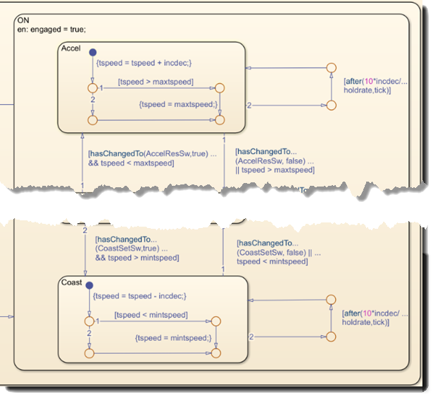
13. Run Design Error Detection on the model
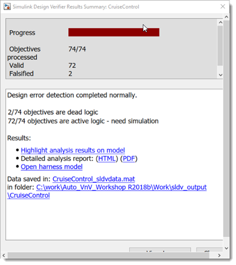
14. Analyze the transitions with "dead logic"

- Transition condition "tspeed > maxtspeed" can never be true due to the limit check in the "Accel" state. While looking at this condition, is there a design logic error? Yes! The transition condition should be "tspeed >= maxtspeed".
- The corresponding transition "tspeed < mintspeed" for the "Coast" state shows "dead logic" and needs to be modified to "tspeed <= mintspeed".
15. Modify the model to include these logic operator changes.
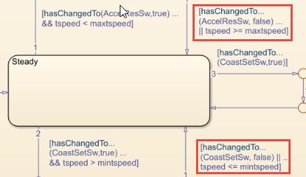
16. Run Design Error Detection on the model
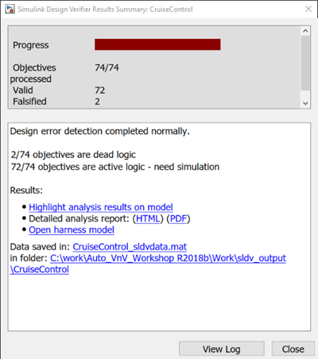
It might be a suprise that the results show (2) falsified objectives.
17. Analyze the transitions with "dead logic"
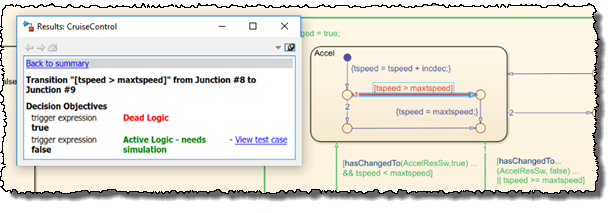
The "tspeed" limit transition "[tspeed > maxtspeed]" true objective was found to be "dead logic". The modified exit condition "tspeed >= maxtspeed" will exit the state before "tspeed" can be increased beyond "maxtspeed". Based on this result, maybe the recommended safety design change was not needed. With further study, we realize the value of "incdec" was (1) for the static analysis but in practice it can have a value of (1) or (2). For an "incdec" value of (2) it appears the limit check is necessary. Let's include the range of "incdec" in the analysis.
18. Modify the Design Verifier settings to include the range of "incdec"
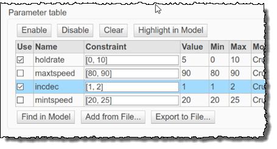
19. Run Design Error Detection on the model
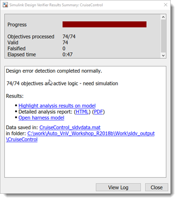
20. In the model select the transition "[tspeed > maxtspeed]" to update the results window. To retrieve the "Test #", select View test case to open up the signal builder dialog with "Test Case 9" displayed.
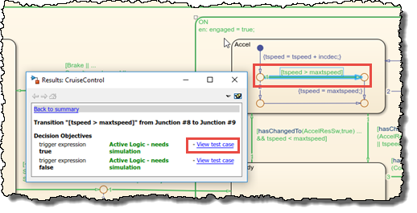
21. Use the test # (9) to navigate to the "Test Case 9" in the report that satisfies the true objective for the "[tspeed > maxtspeed]" transition in the limit check.
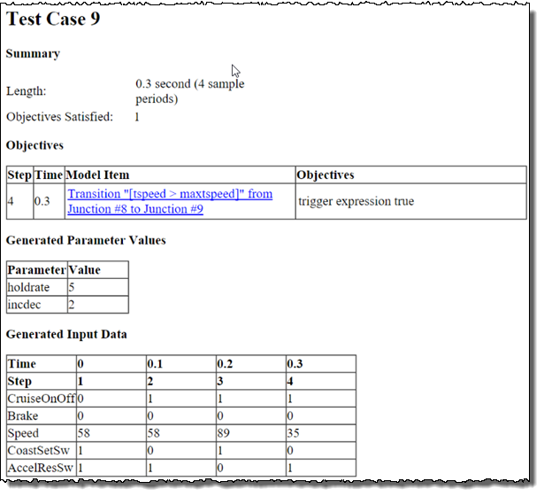
Notice the test case uses a value of (2) for "incdec".
We have gained an insight into our design by iteratively checking our design and interpreting the results.
Running Divide by Zero Detection on the Model
Another feature of Design Error Detection is the ability to analyze the model for calculations that result in a divide by zero. Calibrations typically have a range of values that are permissible within specified limits. As we did in the previous section, we will use the parameter table in the Simulink Design Verifier settings to perform the analysis over a range of values. To perform the "divide by zero" analysis, do the following:
1. Open the "CruiseControl.slx" based on the "dead logic" work – click here.
2. In the Design Verifier settings, check the parameter table has been enabled with "holdrate" and "incdec" enabled. These are the same settings from the final "dead logic" analysis perform in the previous section.
2. For this analysis, configure Design Error Detection to check for Division by zero.

3. Make the menu selection Analysis/Design Verifier/Detect Design Errors/Model to perform the analysis on the model
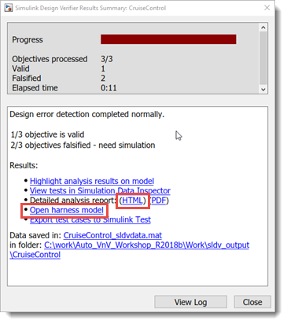
Let’s take a look at the results and see what might be causing the error.
4. Open the report to help us debug the divide by zero issue.

Since the analysis included the use of a parameter table to specify a range of parameter values that were part of the analysis. Navigate in the report to the "Parameter Constraints" section to verify the range that was used in the analysis. Next look at the generated test cases, noting the parameter values of (0) for the "holdrate".
5. Using the generated harness model, run "Test Case 1" to debug the issue.

The cause of the issue is the "holdrate" lower limit value of (0).
6. Change the lower limit of "holdrate" in the workspace to (1).

Update the Design Verifier settings to include the new range of "holdrate".
7. In the Parameters section, select all parameters and press Clear.
8. Select Find in Model to populate the parameter table with the new "holdrate" limits from the workspace. Make sure to uncheck the Use column for "maxtspeed" and "mintspeed".

9. Run Design Error Detection on the model

Automating Design Error Detection Checks
What we have shown is an interactive, manual way to run the checks. There is an automated method to run the Design Error Detection checks on the model with Model Advisor.
1. Make the menu selection Analysis/Model Advisor/Model Advisor
2. In the popup window, choose the top model, "CruiseControl" to analyze

3. Navigate to Model Advisor/By Task/Simulink Design Verifier Design Error Checks.
4 Select (2) checks to run: ^Detect Dead Logic and ^Detect Division By Zero
5. Press Run Selected Checks for the Design Error Detection group of checks

With the inclusion of Design Error Checks in Model Advisor you now have the option of adding these checks as part of your development and testing workflow. These checks may be a pre-condition to begin the more formalized testing shown in Step 4: Testing by Simulation.
Summary
With the functions above, we were able check our Cruise Control model for difficult design errors like dead logic and divide by zero. The analysis was very automated with minimal work to configure the analysis to run on our model. We utilized the Design Error Detection function of Simulink Design Verifer to find the design errors.
The Design Error Detection function is based on formal methods which does not require dynamic execution of the model or the creation of test vectors to perform the analysis. Formal methods use the entire specified range of signals and parameters to prove the absence of design errors. If during the analysis, a design error is found then a test case is generated including the input test vectors and parameter values. A test harness can also be created to execute the test case to isolate and fix the design issue.
When the Design Error Detection analysis was performed on our Cruise Control model, two types of design issues were found: dead logic and divide by zero. It was easy to analyze the results presented on the model and the generated test harnesses to fix these issues.
We were able to find and fix these issues early in our development process, increasing confidence in our design. We will continue to answer more of the questions in the next steps with our structured and formal testing framework for securing the quality, robustness and safety of our cruise controller.

When you are finished, close all models and files - click here.
Go to Step 4: Testing by Simulation - click here.